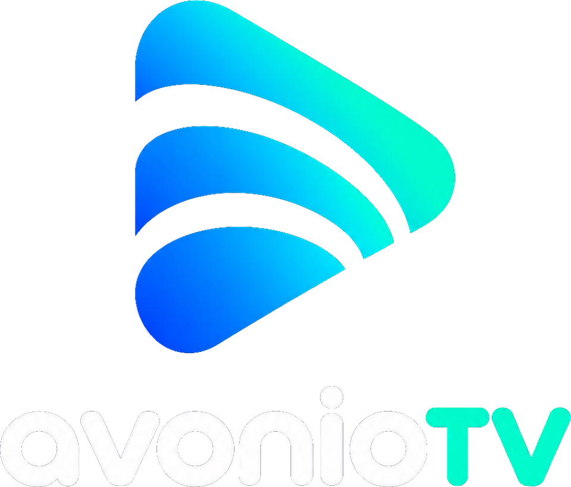

The two approved layouts
Stacked

Welcome screens, launch screens and centered brand moments.
Horizontal
TV navigation, dashboard headers and desktop toolbars.
Colour system
#030C24RGB 3, 12, 36#0066FFRGB 0, 102, 255#00C8EDRGB 0, 200, 237#00E5BFRGB 0, 229, 191#FFFFFFRGB 255, 255, 255#F4F7FBRGB 244, 247, 251#A7B4CCRGB 167, 180, 204Standardized implementation palette matched to the approved artwork. Use the supplied PNGs to preserve its exact gradient appearance.
Which files to use
| Platform / use | Start in this folder |
|---|---|
| Full logos, transparent and monochrome | 02_Logos |
| Small symbol-only icons | 03_Universal_Icons |
| iPhone and iPad | 04_Apple / iPhone_iPad |
| Mac / ICNS | 04_Apple / Mac |
| Apple TV / layered assets | 04_Apple / AppleTV |
| Android TV / Google TV | 05_Android_TV |
| Windows / ICO | 06_Windows |
| TV dashboards / HD through 4K | 07_TV_Dashboard |
Keep it clear
Space and size
Preserve aspect ratio. Keep roughly one lowercase letter-height of clear space around full logos. Use the symbol alone at small sizes. Start at 180px wide for a horizontal logo, 160px for stacked and 24px for the symbol.
Typography
The wordmark is supplied artwork. Use native system sans-serif for app UI: Apple system fonts, Roboto or Segoe UI. Do not retype the wordmark in a substitute font.
Developer handoff
Read the complete brand and platform setup guide · Colour tokens (JSON) · CSS variables
The source logos are raster artwork. Larger exports are resampled, not vector masters. Platform layers and icon sets are supplied as developer inputs; final app builds and device appearance still need verification in the target toolchain.